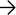

We provide next-gen
technologies for the creation
of trustless digital ecosystems.
Mission
Waves Association’s mission is to provide next-gen
technologies for the creation of trustless digital
ecosystems, decentralized collaborative environments
and organizations.
DISCLAIMER
The association advances emerging technologies to facilitate decentralization of infrastructure, apps, processes and organizations.
The Association is a non-profit organization dedicated to global adoption of the Web 3.0 paradigm, by means of fostering research, governance of Waves ecosystem, and providing grants for the development of the Waves technology stack.
01
Technology
Support and development of the Waves protocol and infrastructure, which includes a decentralized network, technologies and various development tools
02
Tools
Create everything the community needs, enabling anyone to build on Waves a nd create their own applications and use cases with the ecosystem’s technologies and tools
03
Governance
Implement decision-making on the blockchain, such as voting on all major issues and updates, as well as development of DAO-style governance in the future
04
Research and education
Active collaboration with universities, research centers, industry, and governments in Europe and around the world
Our goals
The Waves Association is focused on implementing the following goals
01
02
projects

An open blockchain protocol for DeFi applications as well as other dApp cases, combining both security and high transaction speeds for a wide range of on-chain operations and featuring community-driven monetary policy. Waves supports development of dApps of any kind thanks to the protocol's purpose-designed programming language, Ride. Ride offers formal verification with flat fees and no ‘gas’, resulting in low and predictable operating costs and a zero failure rate for transactions.
Links
Medium
Twitter
Website
Q3 – Q4 2019 Report

Q3 – Q4 2019 Report
Q3 – Q4 2019 Report
Reports
Here you’ll find quarterly reports on the work of the Waves Association
Grants
We provide grants for the creation of decentralized solutions that contribute to the development of the Waves ecosystem and the blockchain industry as a whole.
To apply or learn more, visit
Waves Labs website